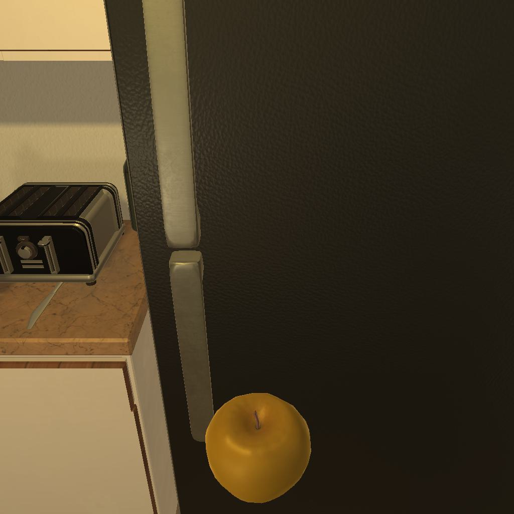

---------------------------------------------------------task: 14---------------------------------------------------------
--------------------------------------------------------------------------------------------------------------------------------------------------------------------
--------------------------------------------------------------------------------------------------------------------------------------------------------------------
Step:--------------------------------------------------------------------------11-------------------------------------------------------------------------------
----------------------------------------
VLM Prompt:
Image1:
Image2:
**Instruction**
1. Analyze the provided images to identify all visible household objects and compare the difference between images (e.h. whether the object is opened or not and taken on hand or not), focusing on those relevant to the task description "put a cool apple in countertop."
2. Use the analysis of images and the task hint "The agent must find an object of the desired type, pick it up, go to a fridge, cool the object with the fridge, then find the correct location to place it, and put it down there. The agent does not need to use the fridge button or open the fridge to cool the object, and the agent just needs to do action that is "cool the object with the fridge"." to answer the question: what is the most reasonable action in the choices for the task description "put a cool apple in countertop"?
3. Decide and write the answer using the template: The answer is: (i): , where i is the real number. If there is no desired object in images, search every place based on **Initial Observation** to find the object. And if no one is exactly correct, choose a similar answer.
**Initial Observation**
You are in the middle of a room. Looking quickly around you, you can see microwave (1), countertop (1-2), cabinet (1-11), diningtable (1), drawer (1-3), sink (1), sinkbasin (1), toaster (1), stoveburner (1-4), fridge (1), coffeemachine (1), garbagecan (1)
**Answer Choices**
(1): go to microwave 1
(2): go to countertop 1
(3): go to cabinet 1
(4): go to diningtable 1
(5): go to drawer 1
(6): go to sink 1
(7): go to cabinet 2
(8): go to cabinet 3
(9): go to sinkbasin 1
(10): go to cabinet 4
(11): go to cabinet 5
(12): go to drawer 2
(13): go to countertop 2
(14): go to toaster 1
(15): go to cabinet 6
(16): go to stoveburner 1
(17): go to cabinet 7
(18): go to stoveburner 2
(19): go to stoveburner 3
(20): go to stoveburner 4
(21): go to drawer 3
(22): go to cabinet 8
(23): go to cabinet 9
(24): go to cabinet 10
(25): go to coffeemachine 1
(26): go to cabinet 11
(27): go to garbagecan 1
(28): open fridge 1
(29): close fridge 1
(30): put apple 1 in/on fridge 1
(31): examine apple 1
(32): examine fridge 1
**Answer**
Let's think step by step by following the instructions.
----------------------------------------
----------------------------------------
Original Response:
Firstly, we need to identify all visible household objects in the images. In both images, we can see a fridge on the left side, a countertop below it, and an apple on the countertop. There are no significant differences between the two images, and no objects appear to be opened or taken by hand.
Now, considering the task description "put a cool apple in countertop" and the task hint, the agent needs to find an apple, go to the fridge to cool it (without using the fridge button or opening the fridge), and then place the cooled apple on the countertop.
In the images, we already have the apple on the countertop, so there is no need to search for the apple or perform any actions related to finding the apple. The agent needs to cool the apple with the fridge and then put it back on the countertop.
Based on the answer choices provided and the task at hand, the most reasonable action for the agent to perform would be to cool the apple with the fridge and then place it on the countertop. Since there is no specific action listed for cooling the apple with the fridge, we will select the action that involves interacting with the fridge and the countertop.
The answer is: (30): put apple 1 in/on fridge 1
----------------------------------------
----------------------------------------
>>> Refine Original VLM Response and Get Pure Action: put apple 1 in/on fridge 1
----------------------------------------
-----------------------------------------------------------------
Running time: 12.540546417236328 seconds
Total Money: 6.525730000000003
-----------------------------------------------------------------
-----------------------------------------------------------------
Text Observation:Nothing happens.
-----------------------------------------------------------------
UNSUCCEED